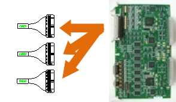

供应到伺服驱动装置的控制电源+15V下降了。该错误由伺服驱动装置感知后通过CNBS电缆传达到伺服板。
|
1. 请确认电源标示LED。 n 请确认伺服驱动装置的“VE”LED。 n 请确认控制电源供应装置SR1的“+15V”LED。
<2个模块的LED都OFF时> 2. 请确认控制电源供应装置(SR1)的输出。 n 请拆除CNBS 电缆后确认LED。 n 请从机架（Rack）中拆除伺服板后确认LED。
3. 请检查控制电源供应装置(SR1)。 n 请确认输入到SR1的电压。 n 请更换SR1后确认LED。
<只有伺服驱动装置的“VE”LED被OFF时> 4. 请更换相关配件后确认电源LED。 n 请更换CNBS电缆后确认LED。 n 请更换伺服板后确认LED。 n 请更换伺服驱动装置后确认LED。 |
1. 请确认电源LED。
驱动装置的控制电压下降错误在控制用+15V下降时发生，此错误由伺服驱动装置感知后，通过CNBS1、2、3电缆在伺服板(BD540/BD541)进行处理。
图 5.56 Hi4a-0000 控制器驱动装置的控制电压下降相关配件布置
图 5.57 Hi4a-0010/0012 控制器驱动装置的控制电压下降相关配件布置
1) 检查伺服驱动装置的“VE”LED
请确认感知驱动装置控制电压错误的模块—中型用HSXY6和小型用HDAD6的“VE”。正常供应电源时，该LED应时常处于ON(点亮)状态。
中型机器人用伺服驱动装置: HSXY6
小型机器人用伺服驱动装置: HDAD6
2) 检查SR1 的“+15V”LED
若伺服驱动装置的“VE”LED处于OFF状态，请确认SR1的LED。请确认SR1和伺服驱动装置的LED是否同时OFF。

图 5.17 SR1 的 ‘+15V’ LED 相关配件布置
2. 请确认SR1的输出。
为了确认SR1的输出，请拆除连接于伺服驱动装置的电线和配件并检查“+15V”LED。
1) 拆卸CNBS电缆后检查LED
将连接伺服驱动装置和伺服基板的CNBS1、CNBS2、CNBS3拆卸后，确认SR1的LED。拆卸电缆后，若SR1的“+15V”LED处于ON，这就表示伺服驱动装置的不良。请把伺服驱动装置更换为正常品。

图 5.59 拆卸CNBS电缆
2) 拆卸伺服板(BD540/BD541)后检查LED
从机架中拆卸伺服板后确认SR1的LED。拆卸伺服板后，若SR1的“+15V”LED为ON，这就表示伺服板的不良。请把伺服基板更换为正常品。

图 5.60 从机架中拆卸伺服板
3. 请检查控制电源供应装置(SR1)。
控制电源供应装置接收AC 48V后，在内部电路上输出各基板所需的控制电源。
1) 检查SR1的输入电压
输入到SR1的电压超过规格时，控制用电源的输出可能会发生异常。输入电压超过允许范围时，请参考控制器输入电压的检查步骤和控制器内部单相电压的检查步骤。
SR1输入电压规格: 单相AC 48V
允许范围: 44V ~ 52V
2) 更换SR1后确认LED
将SR1更换为正常品后，请确认“+15V”LED。如果在换了正常品之后，若LED为ON，这就表示SR1不良。请将其更换为正常品后使用。
4. 请更换相关配件后确认电源LED。
请更换伺服驱动装置、伺服板及CNBS电缆后，确认伺服驱动装置的“VE”LED。
1) 更换CNBS电缆后检查“VE”LED
请更换连接伺服驱动装置和伺服板的CNBS1、CNBS2、CNBS3后。确认伺服驱动装置的“‘VE”LED。更换电缆后，若“VE”LED为 ON，这就表示电缆不良。请把CNBS电缆更换为正常品。
2) 请更换伺服板后检查“VE”LED
请更换伺服板后确认伺服驱动装置的“VE”LED。更换伺服板后，若“VE”LED为ON，这就表示伺服板的不良。请把伺服基板更换为正常品。
3) 更换伺服驱动装置后检查“VE”LED
请更换伺服驱动装置后确认伺服驱动装置的“VE”LED。更换电缆后，若“VE”LED为ON，这就表示伺服驱动装置的不良。请把伺服驱动装置更换成正常品。
中型机器人用伺服驱动装置: HSXY6
小型机器人用伺服驱动装置: HDAD6